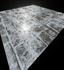
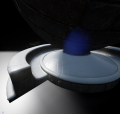
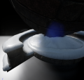

Dynamic snow material - Video
In this tutorial we will be working on the dynamic snow material, which can either be used with material instances or in more complex way, with blueprints. The page will be extending, when new tutorials for the material would be published.
Contents
End result
Some of the material features can be seen in these videos:
Tutorials
All the tutorials made will be posted here.
Basic snow material tutorial
<youtube> https://www.youtube.com/watch?v=IqqzKvBc9hc
In this tutorial you will create the snow material with some basic functionality:
- Adjustable snow amount
- Custom normal&diffuse maps
- Full parameters exposure to dynamic material instances and blueprints
Basic blueprint snow tutorial
<youtube> http://youtu.be/hUBDq5nyoY0
In this tutorial you will learn how to use basic snow material in the Blueprints.
- Dynamic material instancing
- Proximity-based blueprint
Tesselated snow tutorial part 1
<youtube> http://youtu.be/-8pv6QLLTjM
In this tutorial you will prepare your material for the tessellation, making the snow effect appear primarily on the top of a mesh.
Tesselated snow tutorial part 2
<youtube> http://youtu.be/ItnbR1-gHQw
In this tutorial we will apply basic tessellation to our material, making sure it appears properly on the top and is fully adjustable from material instances.
-

Basic material used with brick texture
-

Slightly tessellated snow on the mesh
-

Heavily tessellated snow on the mesh
-- ( ) 22:43, 11 June 2014 (UTC)